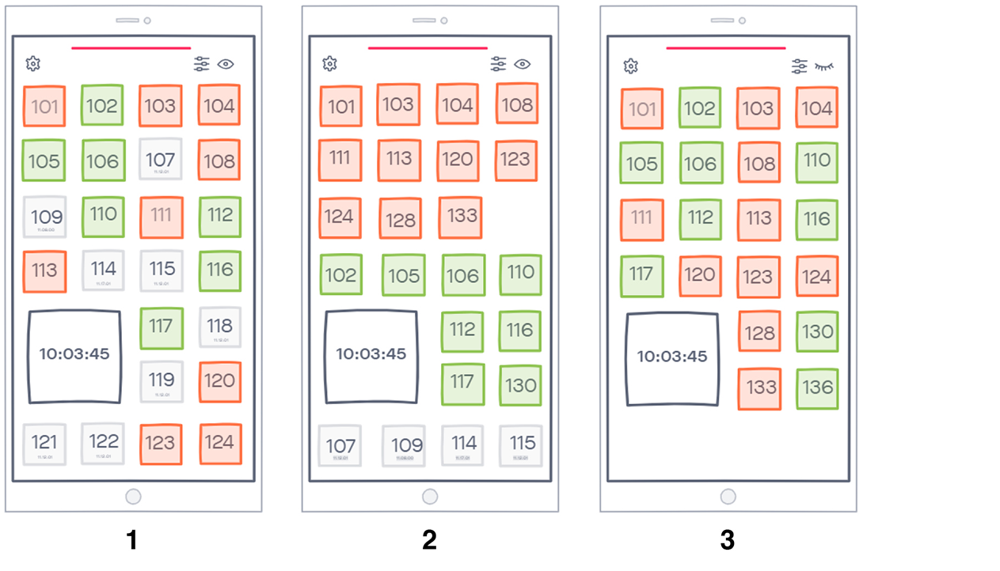
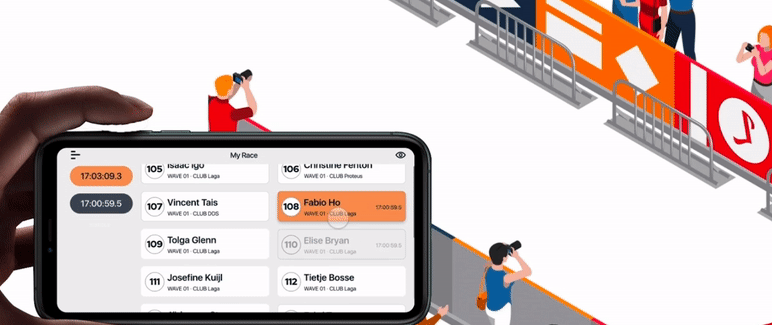

RaceClocker
OVERVIEW
Raceclocker is an online timing tool for the manual timing of sports races. Its goal is to provide race managers and timekeepers with accurate racer timing for small-scale races. In this project, we researched and redesigned this race timing tool in order to improve usability.
MY ROLE
User research, Data analysis, Prototyping, UI design, Usability test
February 2021 - June 2021 (30 working days)
Context
RaceClocker is a manual timing for many types of sport races like rowing, cycling, running, etc. This online timing tool operates without chips, transponders or stopwatches. Tracking time happens via the race server cloud. It is not internet- speed dependent therefore provides accurate timing of the participants. Timing is possible at the race’s start, end, and up to three split points. A race manager can send the link for timers to timekeepers on different points. These timers can run on a connected tablet, phone or laptop. RaceClocker’s goal is to provide coaches, race managers, and time keepers with accurate and high-quality race timing service.

Use Scenarios
RaceClocker's Ecosystem
In order to have an overview of this digital product, we analysed its ecosystem by defining its direct users, indirect users, primary user interface, symbiotic product/service and environment.
We identified five user groups of RaceClocker:
Direct users of RaceClocker are race managers and timekeepers. Race managers create races and collect and enter all necessary details such as date, time, location and participant lists. Timekeepers register the exact time participants pass their start, finish or split point during the race.
Indirect users are the sporters - the participants who join the race - and the audience viewing the race, in real life or remotely. RaceClocker offers real time result sharing, enabling participants and audience to see performances directly. Furthermore, sport coaches can also use RaceClocker as a tool to compare performances within training sessions.
Explore
Field Research
We had a chance to observe and experience a real-world rowing race as timekeepers. This experience helped us to validate our first assumptions from the interview and gain new insights.
- Hand eye coordination is hard while timing with RaceClocker. Timekeepers need to pay attention to three dimensions at the same time which makes the experience stressful.
- Y: which boat
- Z: whether it passes the line
- X: press the correct time button
- Timekeepers prefer to use smartphones for timing, and hold their devices horizontally, enlarging the timer buttons.
Usability test of current RaceClocker
We conducted 6 user tests, in which we tested three scenarios: before, during and after the race. We simulated a rowing race and asked participants to complete 9 tasks with RaceClocker.
During user tests, we found out that tasks regarding tracking time are rated as the most difficult.


Conclusion
After the field research and user tests, we were able to define the design problems.
- The eye-hand coordination and operation within RaceClocker is difficult to manage.
- The user receives no clear feedback after clicking a button or icon.
- Some buttons’ or icons’ meanings cause misunderstanding or confusion.
- Users can easily get lost in the many pages due to a complicated useflow.
- The RaceClocker app’s current hierarchy of pages causes confusion among users.
Define
Design Focus
After evaluating the usability of RaceClocker, we decided to focus on the timing phase during a race. We want to make users feel in control when using RaceClocker. Time recording during a race should be intuitive, efficient and fast. Besides, users should feel confident when using and navigating through the functions RaceClocker offers.
Design
Low-fidelity Prototype
We created several lo-fi prototypes with InVision to explain our ideas.
Flexible Layout
To make the interfaces suit different preferences, we made it easy to customize the interface. For example, users can easily change the size of buttons by pinching with two fingers. Besides, the digital timing button can be easily moved to different places on the screen as users wish.
Color Code
We used different colors to indicate different states of the participants: orange indicating the participant has already passed the last split point and is approaching, green indicates the participant hasn’t passed the last split point, and grey indicates those timed participants.
Different Sorting Ways
- Sorting by the order of numbers, which helps timekeepers to find a number quickly.
- Sorting by the approaching states is aimed to cluster those approaching participants to help timekeepers to reduce their cognitive load.
- The ‘hide/show the timed participants’ helps them to focus more on the unfinished participants.
Gesture operation
We used gestures like ‘long press‘ to trigger the expansion of the drop list of more actions. In this way, we make the main interface simple and only contain the necessary elements related to timekeeping.
Peer Testing
We tested our lo-fi prototypes with fellow design students. During peer testing, we aimed to test different parts of our design separately and compare different solutions by asking for feedback.
High-fidelity Prototype
In order to fit the current style of RaceClocker, we remain its color palette.


Press the volume button at the moment that the racer is passing by. There is vibration feedback when pressing the volume button and the recorded time will appear on the left area. Select the correct racer to assign the time, in this case 110. The selected racer is also highlighted in the orange color, and the assigned time shows next to the racer’s name. If the second racer is coming, same as before, you first time and then select the racer. Here you might notice that the new recorded time is automatically selected, so that you can start with assigning directly. Unselected times are in dark blue, and the already assigned racers of those times are grey.
If you find out that you accidentally assigned the time to a wrong racer, you can simply deselect it and then select the correct one.

If two racers are coming at the same time, you only need to time once and select those two racers 101 and 139 to assign the time.

If you want to check if you have assigned the time correctly, you can select that time and you will get jumped to the racer that have been assigned to that time. The other way around, if you select a timed racer, the corresponding time will be highlighted.
When the most racers have already been timed. You can click this eye icon to hide them so that you have a shorter list on the screen.
When you finish timing all racers, you will get a pop-up window which confirms the completion and invites you to the result page.
Evaluation
6 participants
Comparison A-B: assesses current RaceClocker and our redesign separately and then compares them. Attrakdiff score of the cu
Let's Chat
We’d love to chat about your business, send us an email.